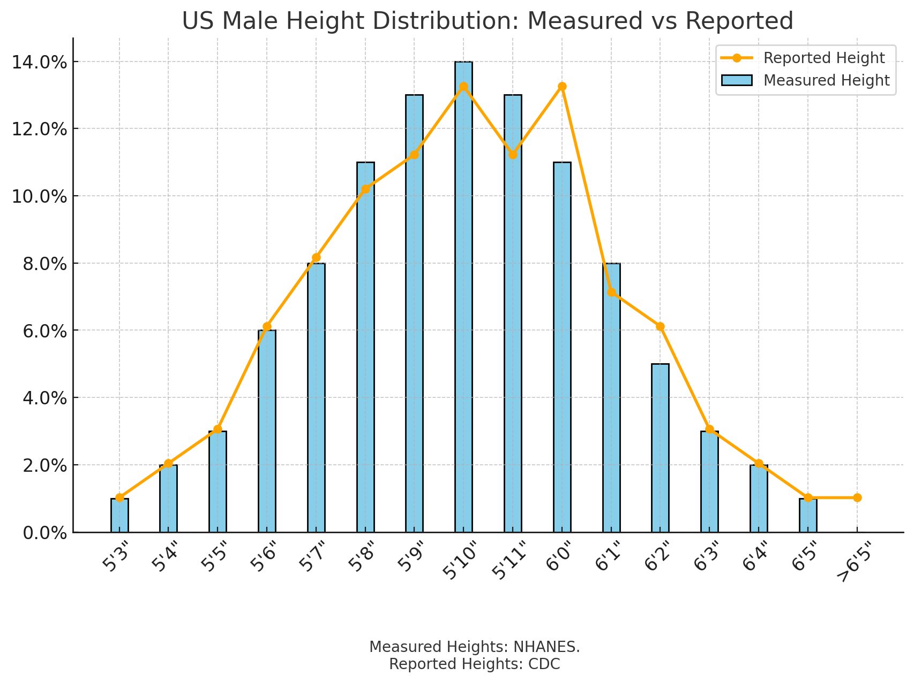
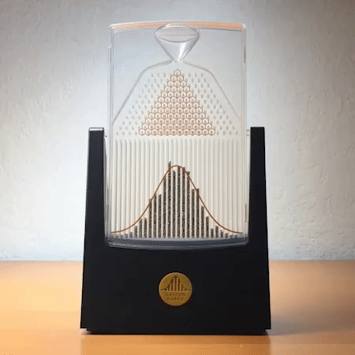
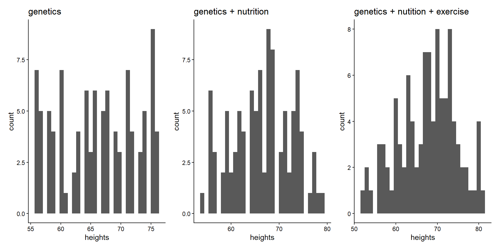

What happens is only caused by 1. Our own rules and 2. The laws of probability.
Purpose of simulations
Statistics asks:
Based on what we observe in our imaginary world, what are the laws of probability?
If you observe my world without knowing my rules, can you use probability to guess my rules?
Let’s build our own simulation!
Simulating the Central Limit Theorem
We will be using a simulation of how heights in a population become normally distributed
This will demonstrate a key law in statistics: the Central Limit Theorem (CLT)
First, a puzzle
Puzzle: why are there are so many normally distributed data in the world?


Even in vastly different domains, the normal distribution shows up a lot.
Is there a shared process that can explain them all?
Answer: The Central Limit Theorem (CLT)
Central Limit Theorem (CLT): Basic idea
Explains how data can become normally distributed.
✑
Building a simulation: the details of height
First, let’s think mechanistically
What are some factors that cause differences in height?
Try to think of direct causes, not just correlation.
✑
Impact of these factors
How much do these factors impact height? \(\pm\) how many inches?
Doesn’t have to be accurate!
✑
Building the simulation structure
I propose, that in my imaginary world, this is the “truth” of how height is constructed:
There’s an average height
Then, for each person, we sample some values for all the factors
The final height for a person is the sum of the average height and their sampled factor values.
A person’s final height = Avg. Height + Genetics + Nutrition + Exercise
Live demonstration of the simulation
Your turn!
Fill in the ? and put the items in the correct order. The first item is given.
Steps — drag to reorder, drop words onto blanks
1.simulated_heights = empty_list(given)
Word Bank
Drag onto a blank, or click a filled blank to remove it.
Slido
What happens when we add more factors?

Importance of Central Limit Theorem (CLT)
We will use the CLT in future classes to derive the Confidence Interval and p-values, which allows us to infer something about the real, “unknown rules” (more formally, the “population”).
Key takeaways
Simulations are imaginary worlds where we create our own rules
We can use simulations to demonstrate laws in statistics; these laws used to infer the invisible rules
Central Limit Theorem: Many independent causes → normal distribution